; a constant or harmonic perturbation coupling to a continuum gives the constant rate
; a constant or harmonic perturbation coupling to a continuum gives the constant rate  with .
with .Dyson series
In the interaction picture
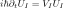
, iterated (Dirac 1927):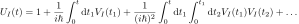
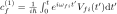
,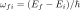
.Derivation of the golden rule
Constant
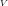
switched on at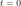
(Fermi 1950):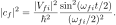
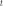
,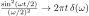
: the probability grows linearly in time. Summing over a continuum with density of states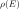
: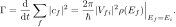
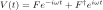
: absorption with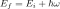
(matrix element of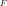
) and stimulated emission with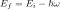
(of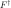
).Validity
long compared with
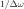
of the continuum (so the delta is well defined) but short enough that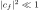
(initial state not depleted); otherwise exponential decay (Weisskopf–Wigner) or Rabi oscillation (discrete final state).Worked example
Photoelectric absorption in a semiconductor:
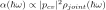
, and the 3D joint density of states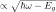
gives the square-root absorption edge of direct-gap semiconductors.Engineering applications
Absorption and gain in lasers, radiative and Auger recombination rates in LEDs, electron–phonon scattering times (mobility), tunnelling currents (Bardeen), decay rates and cross sections in QED.
Pitfall
 is the density of final states at the energy fixed by energy conservation; for photons it includes polarisation and direction, for electrons spin.
is the density of final states at the energy fixed by energy conservation; for photons it includes polarisation and direction, for electrons spin.